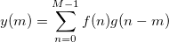

相関とは、2つの任意の変数または信号の数学的関係のことです。統計においては、相関は正規化された共分散と見なされています。2つの同一の信号の相関を自己相関と呼びます。
相関は線形または循環にすることができます。一般的には、線形の相関は入力信号にインパルスが含まれる場合に使用し、循環相関は信号か周期的に繰り返される場合に使用します。
相関の強さは相関係数で表します。 f(n) およびg(n) を同じ長さ Mの2つの信号とします。その相関は次式で定義されます。

入力信号が同じ長さでない場合、短い方の信号にもう一方の信号と同じ長さになるように0が付加されます。線形相関に対して、結果シーケンスの長さは2M-1であり、循環相関の結果シーケンスの長さはMです。
計算された相関の大きさは、信号間の類似性の程度を示しています。その大きさが大きい場合、2つの信号には強い線形相関があると言えます。その大きさが小さい場合、2つの信号には線形相関がほとんどないか、全くないと言えます。
相関係数が正規化されている場合、(正規化チェックボックスを選択), その絶対値の範囲は0から1となり、2つの信号間の類似性が判断しやすくなります。相関係数が1または-1の時、2つの信号は完全に相関していると言えます。
相関の符号は、関連性の方向を示します。正の相関は、ある信号の変化が別の信号を同じ方向に変化させることを意味します。これが正の線形関係です。負の相関の場合、負の線形関係があるといえます。ある信号が大きくなると他方が小さくなります。
相関を使うには
|
このセクションのトピック: |